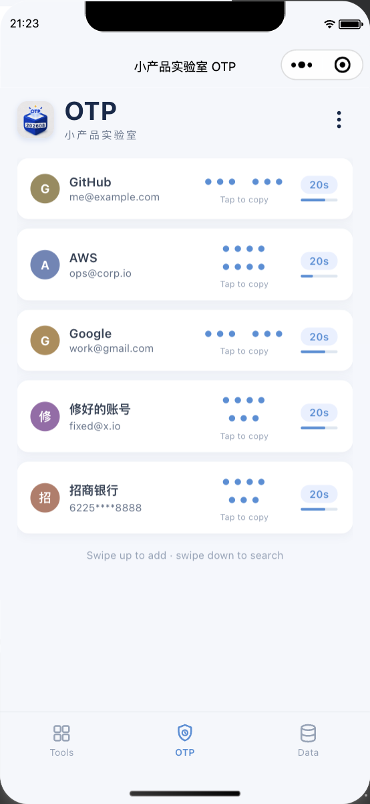
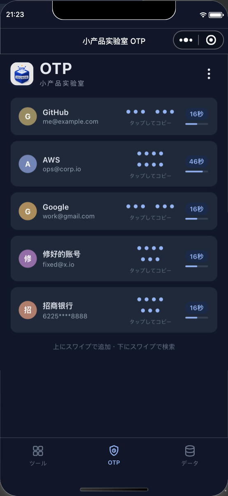

本地 OTP
扫码添加后，验证码在手机本地按时间计算，不需要每次联网获取。
WECHAT MINI PROGRAM · OPEN SOURCE
小产品实验室 OTP 是一个本地优先的两步验证码、密码账本与加密备份工具。无需注册项目账号，打开就能用。
验证码在本地生成 · 备份由你主动发起 · 支持自己的 WebDAV
TRY IT NOW
使用微信扫一扫小程序码，即可打开小产品实验室 OTP。无需创建项目账号，先在自己的手机上试一试。
WHAT IT DOES
扫码添加后，验证码在手机本地按时间计算，不需要每次联网获取。
管理静态密码、分组与备注；提示弱密码和重复密码。
先加密，再导出到微信文件或手动上传到自己的坚果云 WebDAV。
导入加密备份，或使用加密迁移二维码，把关键验证码带到新设备。
LOCAL FIRST
我们不建立项目账号，也不保存你的验证码。需要云端备份时，连接你自己的 WebDAV；备份先在本地加密，再由你确认上传。小程序不在后台自动同步，数据去向始终清晰。
REAL SCREENS
支持简体中文、繁體中文、English 与日本語；明亮与深色主题可按使用习惯切换。



